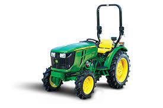
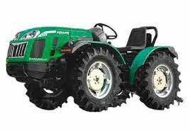

Join Deere 3082 EN
- John Deere 3028 EN comes with Single.
- It has 8 Forward + 8 Reverse gearboxes.
- Along with this, John Deere 3028 EN has a superb kmph forward speed.
- John Deere 3028 EN manufactured with Oil immersed Disc Brakes.
- John Deere 3028 EN steering type is smooth Power steering.
- It offers a 32 litre large fuel tank capacity for long hours on farms.
- John Deere 3028 EN has 910 Kg strong Lifting capacity.

Kubota Neostar B2741 4WD
- Engine Technology- ETVCS
- Seat Suspension
- Super Draft Control (SDC)
- OIB
- ECO-PTO
- Front Side Opening Bonnet
Massey Ferguson 6028 4WD
- Massey Ferguson 6028 4WD has a single clutch, which provides smooth and easy functioning.
- Massey tractor 6028 4WD steering type is Power Steering from that tractor and gets easy to control and fast response.
- The tractor has Oil Immersed Brakes which provide high grip and low slippage.
- The Massey tractor 6028 4WD has a hydraulic lifting capacity of 739 kg, and Massey Ferguson 6028 4WD mileage is economical in every field.
- Massey Ferguson 6028 4WD has 6 Forward + 2 Reverse gearboxes.
- Front Side Opening Bonnet

Ferrari Cromo K30 AR
- This 3 cylinder tractor has a 1123 cc engine and water-cooled cooling mechanism..
- The tractor has 8 forward and 4 reverse gears. The constant mesh Clutch makes the tractor smooth for driving.
- The tractor has 1200Kg lifting capacity and 40 liters fuel tank capacity.
- The tractor has a 1200mm wheel base and power steering
- ECO-PTO
VST Shakti MT 270 VIRAAT 4W PLUS
- It comes with the best transmission system known as Sliding Mesh which transmits maximum torque developed by the engine to the driving wheels.
- The tractor has a solid gearbox with 6 Forward & 2 Reverse gears, which keeps the engine operating at an appropriate speed. Also, it makes more effective use of the engine.
- VST MT 270 - VIRAAT offers 21.74 kmph reverse speed and 8.3 kmph forward speed.
- The mini tractor multi-speed PTO generates 590 & 870 RPM, powering attached small farming machines.
- Still, the MT 270 price is affordable and pocket-friendly for farmers.
Farmtrac Atom 26
- Farmtrac Atom 26 new model hp is a 26 HP Tractor. Farmtrac Atom 26 engine capacity is exceptional and has 3 Cylinders generating 2700 engine rated RPM this combination is very nice for the buyers
- Farmtrac Atom 26 new model tractor has a single clutch, which provides smooth and easy functioning.
- Farmtrac Atom 26 steering type is Balanced Type Power Steering from that tractor get easy to control and fast response. The tractor has Multi Plate Oil Immersed Brakes which provide high grip and low slippage. It has a hydraulic lifting capacity of 750 kg and Farmtrac Atom 26 mileage is economical in every field.